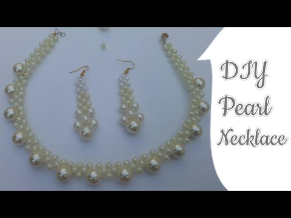

How to Make a Floating Pearl Necklace: Super Easy DIY Fashion Choker Project
by How to Make a Floating Pearl Necklace: Super Easy DIY Fashion Choker Project
Last Updated - 5 Days Ago

Chokers are in great demand. Every fashion brand has them, and they can all be very pricey. So why not make your own at home. They are super easy. This is one type of Choker. You make changes as per your likes. The imagination is unlimited.
Floating Necklace
A floating necklace is a classy and elegant piece of necklace. Translucent or transparent cords or wires are used to put the beads together, that give the necklace a floating look.Making this jewelry is quite simple but the look that it gives to the wearer is beyond compare. Let's get started.
Everything is super cheap and you can get everything at your nearest craft store if you don't get anything. Ordering from Amazon would be a great option too.
Things You Need
The things you'll need for this project are:Transparent Cord
Beads (I am using pearls)
Crimp Ends
Silicone Glue or any other strong glue
Lobster Clasp
A Pair of Scissors
Pliers (optional)
Jump Rings
Toothpick (optional)
Cousin Craft & Jewelry Making Tool Kit, 3-Piece
Buy Now
Supla Open Jump Rings 4mm 5mm 6mm 7mm 8mm 10mm 21 Gauge and 19 Gauge,Lobster Claw Clasp 12 x 7mm for jewlery Making findings (Dull Silver)
Buy Now
Instructions to Make the Necklace
Instructions to make floating pearl choker necklace:Step 1:
Take the transparent cord and measure it around your neck. Make sure it is about 2 cm shorter than your neck girth and cut it out using a pair of scissors. (Images 1 & 2 of the collage)
My cord measures around 32 cm.
Optional: This length is for a choker but you can also make it longer. You can totally customize it as per your likes.
Step 2:
The is to select how many beads you want in your necklace. I will be using 11 pearl beads. If you want to use other types of beads, you can mix them also. Even black beads give a great look to the necklace.
Step 3:
Take your glue and put it on a surface, and take a toothpick to glue the inside of the bead. The other method is to put a glue drop on the string itself for a more professional finish. Insert the bead till the glue and rotate the bead around the glue. Let it dry.
The other method is to put a glue drop on the string itself for a more professional finish. Insert the bead till the glue and rotate the bead around the glue. Let it dry. I went for this method. (Images 3 & 4 of the collage)
Note: Ensure to keep a little extra string about 2 cm from an end to later attach the crimp end.
Darice 360-Piece Round Pearl Beads, 8mm, White
Buy Now
Step 4:
Now we have to decide the space that we want to give between the beads. Mine is about 1.5 cm. You can choose your own spacing between the beads.
Step 5:
Start to align the beads one by one along the necklace. Complete the gluing and also ensure that about 2 cm of the cord is left at the other end for attaching the crimp end. If any access cord is left, you can cut it out. (Image 5 of the collage)
Step 6:
Now take two crimp ends, and using your pliers attach it to both the ends of the cord. (Image 6 of the collage)
Step 7:
Take about 10 jump rings and connect them to each other. to form a chain. Now attach this to the other end of the necklace. This will form an adjustable closure for the choker. (Image 7 & 8 of the collage)
Step 8:
Take a jump ring and attach both a lobster clasp and one end of the necklace. (Image 9, 10 & 11 of the collage)
Voila! Your choker is now ready to wear and rock. (Image 12 of the collage)
This makes a great present to give to your loved ones, for Christmas, for Friendship Day, Valentine's Day, absolutely anything.
Note: You can also download the instructions image from the link below. It might be of great help!
Other Ideas
Here are some other ideas that you can try with this tutorial:Use different color cords, different materials
Use charms
Make a multicolor necklace
Adding different layers to the necklace
Varying lengths of the necklace
Pair this choker with a party dress or something casual or gift it to your loved ones, and you are bound to get compliments from everyone around. It takes only a couple of bucks to make this, but the end product looks like it costs a lot.
Download Link for Instructions
Floating Necklace Instructions
Leave a Comment:
Search
Advertisement